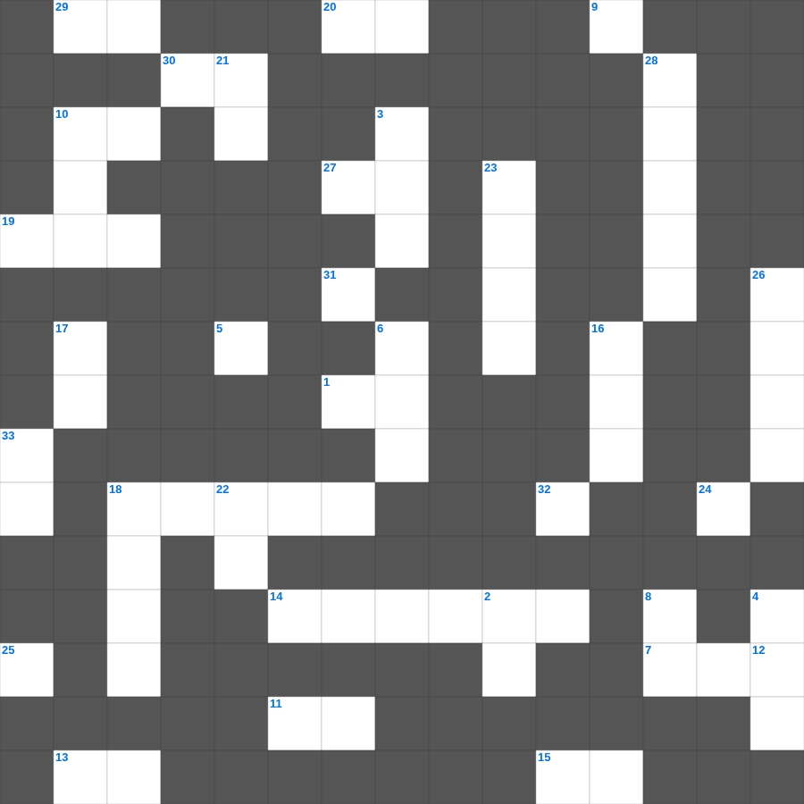

마태복음 마스터 100 (2/2)
📌 서비스 정의
십자가로세로는 교회 주보와 주일학교에서 사용할 수 있는 성경 기반 가로세로 퍼즐 서비스입니다. 성경 인물, 사건, 핵심 구절을 바탕으로 제작되었습니다. 온라인 풀이 및 인쇄 기능을 제공합니다.
📖 마태복음란?
마태복음은 예수 그리스도를 다윗의 자손이자 약속된 메시아로 소개하며, 그분의 탄생부터 가르침, 십자가와 부활까지를 유대인의 관점에서 기록한 복음서입니다.
📚 마태복음의 주요 사건·주제
예수님의 탄생과 동방박사의 경배 · 산상수훈 · 여러 비유들(천국 비유) · 예수님의 십자가와 부활 · 지상명령(마태복음 28장)
오늘은 마태복음의 주요 내용을 담은 마태복음 무료 성경퀴즈를 준비했습니다. 총 35개의 힌트가 있으며, 주일학교 교재나 성경공부 자료로 활용하기 좋습니다. 무료로 즐기는 마태복음 가로세로 퍼즐을 지금 바로 풀어보세요!

📝 가로 힌트
1. 내가 달려갈 길과 주 예수께 받은 이것 곧 하나님의 은혜의 복음을 증언하는 일을 마치려 함에는
7. 이스라엘이 고통 중에 부르짖으면 하나님은 이것을 보내심
9. 보디발 아내의 유혹을 뿌리치고 요셉이 간 곳
10. 요나가 박넝쿨이 마르자 죽기를 구하며 낸 짜증의 이유
11. 너의 마음의 이것이 너를 속였도다 바위 틈에 거주하며 높은 곳에 사는 자여
13. 삼손이 나귀 턱뼈 하나로 죽인 사람 수
14. 길가, 돌짝밭, 가시떨기, 좋은 땅 이야기
15. 다윗이 사울의 추격을 피해 숨은 수풀
18. 브리스가와 아굴라 및 이 사람의 집에 문안하라
19. 우리를 거스르고 불리하게 하는 법조문으로 쓴 증서를 지우시고 제하여 버리사 이것에 못 박으시고
20. 너희를 부르사 자기 나라와 영광에 이르게 하시는 하나님께 이것하게 행하게 하려 함이라
24. 사울이 제사장들을 죽인 사건이 일어난 마을
25. 우리의 싸우는 무기는 육신에 속한 것이 아니요 오직 어떤 견고한 이것도 무너뜨리는 하나님의 능력이라
27. 그러므로 땅에 있는 지체를 죽이라 곧 음란과 부정과 사욕과 악한 정욕과 이것니
29. 나실인이 머리에 대지 말아야 할 것
30. 하나님의 궤를 옮기다 손을 대어 죽은 사람
31. 넷째 날 만드신 큰 광명체
📝 세로 힌트
2. 유다서 1장 10절: 그 알지 못하는 것을 이것하는도다
3. 구원의 투구와 의의 이것
4. 그들 중에 남의 집에 가만히 들어가 어리석은 이것을 유인하는 자들이 있으니
5. 오네시모가 전에는 주인에게 어떤 존재였나
6. 속이는 자 같으나 참되고 이것 자 같으나 유명하고
8. 아론의 지팡이에서 열린 열매
10. 바울이 빌레몬을 부르는 칭호: 사랑을 받는 자요 이것인 빌레몬
12. 이웃 사랑의 계명 '네 이웃 사랑하기를 네 이것과 같이 하라'
16. 여호수아가 요단강을 건널 때 앞세운 것
17. 오네시모의 변화 후 상태를 나타내는 말
18. 다윗이 법궤를 안치하기 전 머물렀던 집
21. 여호수아가 죽은 후 이스라엘을 다스린 지도자들
22. 광야에서 주신 만나의 목적 '너를 낮추시며 너를 이것하사'
23. 사무엘을 키운 엘리 제사장의 다른 아들
26. 오라 우리가 여호와께로 이것 여호와께서 우리를 찢으셨으나 도로 낫게 하실 것이요
28. 엘리야에게 떡을 대접한 사르밧 과자
32. 범사에 네 자신이 선한 일의 이것이 되며 교훈에 부패하지 아니함과 정중함과
33. 이 교훈의 목적은 청결한 마음과 선한 양심과 거짓이 없는 이것에서 나오는 사랑이거늘
🧩 이 퍼즐에서 배우는 내용
이 퍼즐은 마태복음 마스터 100 (2/2)의 핵심 단어와 개념을 자연스럽게 복습할 수 있도록 구성되었습니다. 주일학교 수업이나 개인 성경공부에서 학습 내용을 점검하는 용도로 바로 활용할 수 있습니다.
🧑🏫 교회 교육 자료 활용
이 퍼즐은 주일학교 교재 추천 자료로 활용할 수 있고, 주일학교 주보에 넣기 좋은 분량으로 구성되어 있습니다. 수업용 주일학교 교안에 활동지로 붙이거나, 예배 후 복습용 주일학교 공과교재로 바로 사용할 수 있습니다.
🏷️ 키워드
마태복음 무료 성경퀴즈, 마태복음, 십자가로세로, 성경퀴즈, 말씀퀴즈, 가로세로퍼즐, 주일학교 교재 추천, 주일학교 주보, 주일학교 교안, 주일학교 공과교재